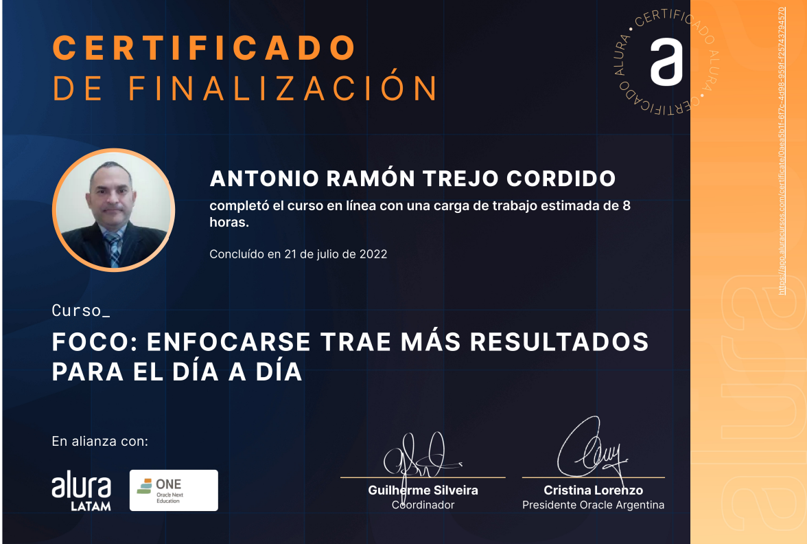
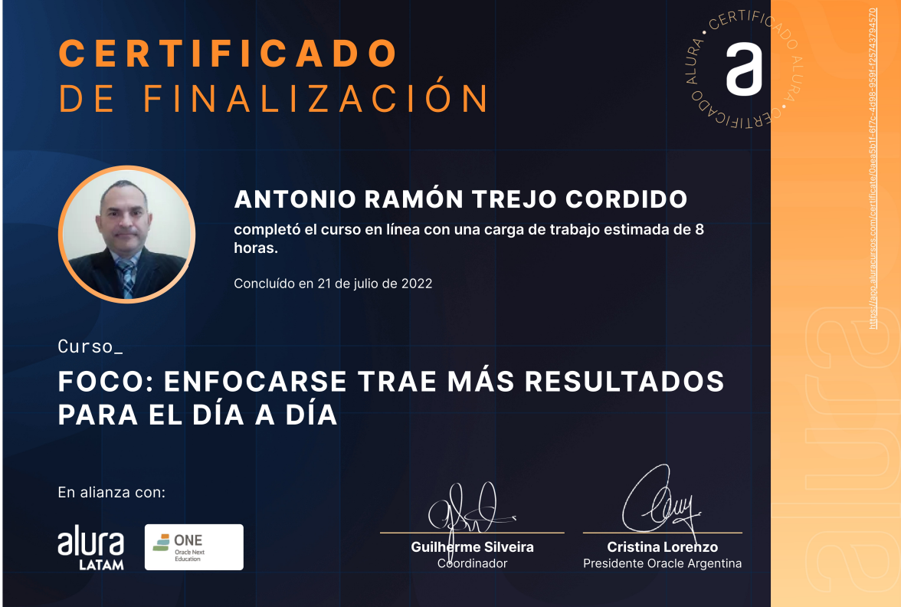

Experiencia Profesional
Representante Quirúrgico.
(Marzo 2021 - Actual)
Iskowitz Instrumental Srl.
(Buenos Aires, Argentina)
- Realizar Promoción, Asesoría Quirúrgica y venta de Insumos Quirúrgicos, dispositivos médicos, equipamientos médicos del rubro Oftalmológico.
- Implementar estrategias de Marketing y hacer estudio de mercado de la competencia. Participación activa en quirófano.
- Colaboración en armado de licitaciones públicas. Manejo de acuerdos comerciales y seguimiento de negociaciones.
- Manejo, Desarrollo y Fidelización de Cartera de clientes (Profesionales de la Salud, Cuentas Claves, Clínicas Privadas, Hospitales y Distribuidores).
- Zona Sur BA, La Plata, Mar de Plata, La Pampa, Bahìa Blanca y NOA.
Representante Técnico Comercial
(Marzo 2017 a Enero 2020)
Alcon a Novartis Company.
(Mendoza, Argentina)
- Planificar reuniones con los clientes para asesoría Técnica, Quirúrgica y Comercial; garantizando una excelente relación y el desarrollo del cliente.
- Proponer e Implementar de planes de desarrollo de clientes y búsqueda de oportunidades en el territorio asignado.
- Fortalecer relaciones a largo plazo con profesionales de la Salud, Clínicas, Ópticas , Distribuidores y Clientes Cuentas Claves en la Zona Cuyo (Mendoza, San Juan, San Luis), NOA, Bariloche y Usuaia.
Visitador Médico.
(Octubre 2010 a Julio 2015)
Bayer S.A.
(Caracas, Venezuela)
- Promoción de Medicamentos de Línea Inmunológica, Crónica y Primary Care.
- Implementación de los planes de acción establecidos por el negocio, orientados al crecimiento en ventas, penetración y cobertura de mercado.
- Planificación y ejecución de actividades de formación médica continua a profesionales de la salud y responsable de desarrollar, construir y fortalecer relaciones a largo plazo.
- Realizar actividades de formación medica con profesionales de la Salud, Clínicas y Hospitales. Participación activa en tomas de quirófano.
Soft Skills
- Capacidad Estratégica y de Planeación.
- Escucha activa y mentalidad orientada al cliente.
- Flexibilidad y apertura al cambio.
- Fuerte capacidad de comunicación y negociación.
 ,
,
- Resilencia.
- Capacidad de Liderazgo.
- Alto nivel de Compromiso y de trabajo en equipo.
- Creatividad y Resolucion de Problemas complejos
- Fuerte disposición aprendizaje constante e independiente.
Acerca de mi...
Soy Ingeniero industrial y Agente de Propaganda Medica. Tengo casi 20 años de experiencia en el área comercial. Soy un profesional creativo, dinámico, perseverante y resolutivo; con capacidad para afrontar y liderar el cambio, dispuesto y motivado a enfrentarse a un medio globalizado y competitivo. Siempre estoy en búsqueda del mejoramiento continuo.
Referencias Personales
Gerente Regional de Ventas en Laboratorios Leti S.A.V. Telf: (+1) 7542098723.
Lic. Patricia Mendoza.
Visitador Medico en Laboratorios Leti S.A.V.
Telf: +54 9 11 2488 7001.
Ivan Hurtado. Visitador Medico en Laboratorios Bayer S.A
Telf: +54 9 11 6668 4154.
Alejandro Baraldi. Especialista Refractivo en Laboraorios Alcon. Telf: +54 9 11 3882 1734.
Javier Vásquez. Gerente Regional de Ventas en Alcon. Telf: (11) 50083589.